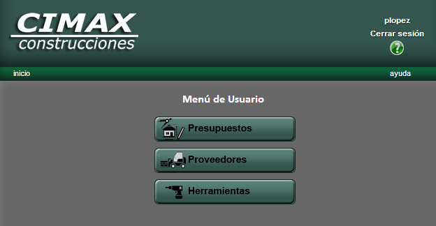

Menú Usuario
A continuación se presenta el menú correspondiente a un usuario del sistema:

Daremos aquí una breve descripción de las opciones disponibles.
- Proveedores
A través de esta pantalla, usted puede acceder a información relativa a los proveedores que fueron cargados en el sistema. Podrá realizar alta de proveedores, modificación de sus datos, y baja de ellos.
- Generar Presupuesto:
A través de esta pantalla, usted podrá elaborar presupuestos, seleccionando los rubros deseados para el mismo, con posibilidad de editar posteriormente las cantidades sugeridas por el sistema. Para más información acerca de cómo realizar un presupuesto paso a paso, podrá encontrar más ayuda en la página de gestión de presupuestos.
- Herramientas
En esta pantalla, usted encontrará una lista actualizada de las herramientas que fueron cargadas en el sistema. Podrá realizar alta de herramientas, modificación de los datos de los herramientas existentes, y baja de herramientas.
Para más información acerca de las operaciones relativas a los herramientas, usted podrá encontrar más ayuda en la página de herramientas.